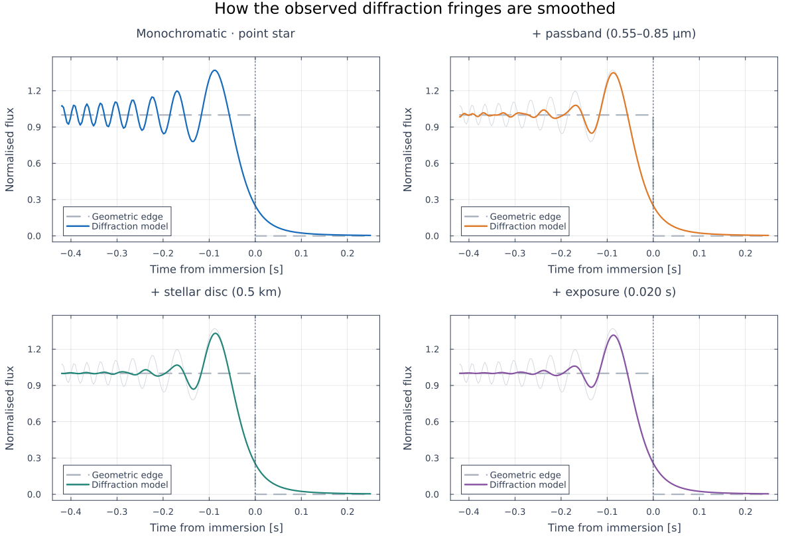
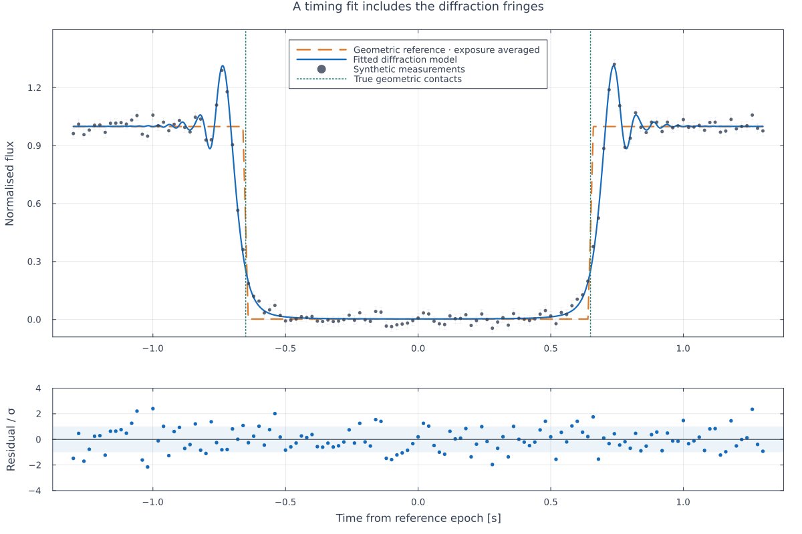

Diffraction in a light-curve timing fit
A synthetic airless occultation at 40 au. fit_timing fits Fresnel diffraction, averaged over the passband, stellar disc and exposure. These are newly simulated data, not observations. Run julia --project=. examples/diffraction_timing.jl.
The code is not run when the manual is built. The output after each section is that of the last run of examples/diffraction_timing.jl, stored in examples/output/diffraction_timing/output.txt.
using Occultations, Random, Printf, Plots
out = mkpath(isempty(ARGS) ? joinpath(@__DIR__, "output", "diffraction_timing") : ARGS[1])
rng = MersenneTwister(20261105)
default(fontfamily="sans-serif", linewidth=2.2, framestyle=:box,
gridalpha=0.12, foreground_color_subplot="#344054", background_color=:white,
legendfontsize=9, guidefontsize=11, tickfontsize=9, titlefontsize=12,
margin=5Plots.mm)
blue, orange, green, purple = "#176BBA", "#DF7928", "#238578", "#8752A1"
function export_figure(p, name)
for ext in ("png", "pdf")
savefig(p, joinpath(out, name * "." * ext))
end
end1. Physical scales and smoothing of a single edge
D = 40 * 149597870.7 # km
v = 20.0 # km/s, normal to the limb
λ, band, sd, exposure = 0.7, 0.3, 0.5, 0.02 # µm, µm, km, s
F = fresnel_scale(λ, D)
@printf("Distance 40 au; normal velocity %.1f km/s; wavelength %.2f µm\n", v, λ)
@printf("Fresnel scale %.4f km; Fresnel time %.4f s\n", F, F / v)
@printf("Passband %.2f–%.2f µm; projected stellar diameter %.2f km; exposure %.3f s\n",
λ - band / 2, λ + band / 2, sd, exposure)The four curves isolate successive averaging effects, with identical contact time.
tedge = collect(range(-0.42, 0.25; length=1400))
edge(; Δλ=0.0, star_diam=0.0, exptime=0.0) =
occultation_flux(tedge, 0.0, Inf; vel=v, dist=D, λ=λ, Δλ, star_diam, exptime)
curves = [edge(), edge(Δλ=band), edge(Δλ=band, star_diam=sd),
edge(Δλ=band, star_diam=sd, exptime=exposure)]
labels = ["Monochromatic · point star", "+ passband (0.55–0.85 µm)",
"+ stellar disc (0.5 km)", "+ exposure (0.020 s)"]
panels = map(1:4) do k
p = plot(tedge, Float64.(tedge .< 0); color="#ABB3BE", linestyle=:dash,
label="Geometric edge", xlabel="Time from immersion [s]", ylabel="Normalised flux",
title=labels[k], ylim=(-0.05, 1.48), legend=:bottomleft)
k > 1 && plot!(p, tedge, curves[1]; color="#D4D9E0", linewidth=1, label="")
plot!(p, tedge, curves[k]; color=[blue, orange, green, purple][k], label="Diffraction model")
vline!(p, [0.0]; color="#344054", linestyle=:dot, linewidth=1, label="")
p
end
export_figure(plot(panels...; layout=(2, 2), size=(1200, 820),
plot_title="How the observed diffraction fringes are smoothed"), "diffraction_smoothing")The dashed edge is a geometric reference, not a second fitted model. The vertical line marks geometric contact. A point-source monochromatic edge has intensity 0.25 there; the fitted times are geometric contacts, not half-light thresholds.

Distance 40 au; normal velocity 20.0 km/s; wavelength 0.70 µm
Fresnel scale 1.4472 km; Fresnel time 0.0724 s
Passband 0.55–0.85 µm; projected stellar diameter 0.50 km; exposure 0.020 s2. Recovering the contact times with fit_timing
ti, te = -0.65, 0.65
t = collect(-1.3:0.02:1.3)
noise = 0.025
lc = simulate_lightcurve(t, ti, te; tref=Epoch("2024-01-01"), vel=v, dist=D,
star_diam=sd, λ=λ, Δλ=band, exptime=exposure, σ=noise, rng=rng,
name="Synthetic diffraction example")
r = fit_timing(lc; vel=v, dist=D, star_diam=sd, immersion=-0.63, emersion=0.63, rng=rng)
ti_fit, ti_err = r[:immersion]
te_fit, te_err = r[:emersion]
@printf("Immersion: truth %+.5f s; fit %+.5f ± %.5f s\n", ti, ti_fit, ti_err)
@printf("Emersion: truth %+.5f s; fit %+.5f ± %.5f s\n", te, te_fit, te_err)
@printf("χ²/dof = %.4f\n", reduced_chi2(r))
println("Uncertainties are local covariance standard errors, conditional on the supplied physical inputs.")Evaluate the fitted model on a dense grid, retaining the measured exposure time.
tfine = collect(range(first(t), last(t); length=2400))
ft, fb = r.derived.flux_top, r.derived.flux_bottom
model = fb .+ (ft - fb) .* occultation_flux(tfine, ti_fit, te_fit; vel=v, dist=D,
star_diam=sd, λ=λ, Δλ=band, exptime=exposure)
geometric = fb .+ (ft - fb) .* clamp.((min.(tfine .+ exposure/2, te_fit) .-
max.(tfine .- exposure/2, ti_fit)) ./ exposure, 0, 1) .* (-1) .+ (ft - fb)This reference uses the same fitted contacts and levels, integrated over the exposure.
p = plot(tfine, geometric; color=orange, linestyle=:dash, label="Geometric reference · exposure averaged",
ylabel="Normalised flux", title="A timing fit includes the diffraction fringes", legend=:top,
ylim=(-0.09, 1.5))
plot!(p, tfine, model; color=blue, label="Fitted diffraction model")
scatter!(p, t, lc.flux; yerror=fill(noise, length(t)), color="#344054", markersize=2.8,
markerstrokewidth=0, markeralpha=0.8, label="Synthetic measurements")
vline!(p, [ti, te]; color=green, linestyle=:dot, linewidth=1.5, label="True geometric contacts")
res = (lc.flux .- model_flux(r.problem, r.values)) ./ noise
q = scatter(t, res; color=blue, markersize=3, markerstrokewidth=0, label="",
xlabel="Time from reference epoch [s]", ylabel="Residual / σ", ylim=(-4, 4))
hspan!(q, [-1, 1]; color=blue, alpha=0.08, label="")
hline!(q, [0]; color="#344054", linewidth=1, label="")
export_figure(plot(p, q; layout=grid(2, 1; heights=[0.75, 0.25]), size=(1200, 800)), "diffraction_timing_fit")
This is a recovery demonstration using the same physical model for simulation and fitting. It does not test an unknown passband, atmosphere or incorrect stellar diameter.
println("Figures saved as PNG and vector PDF in ", out)Immersion: truth -0.65000 s; fit -0.65058 ± 0.00077 s
Emersion: truth +0.65000 s; fit +0.65068 ± 0.00077 s
χ²/dof = 0.9169
Uncertainties are local covariance standard errors, conditional on the supplied physical inputs.
Figures saved as PNG and vector PDF in /home/mike/Astronomy/Julia/Occultations3.jl/examples/output/diffraction_timing